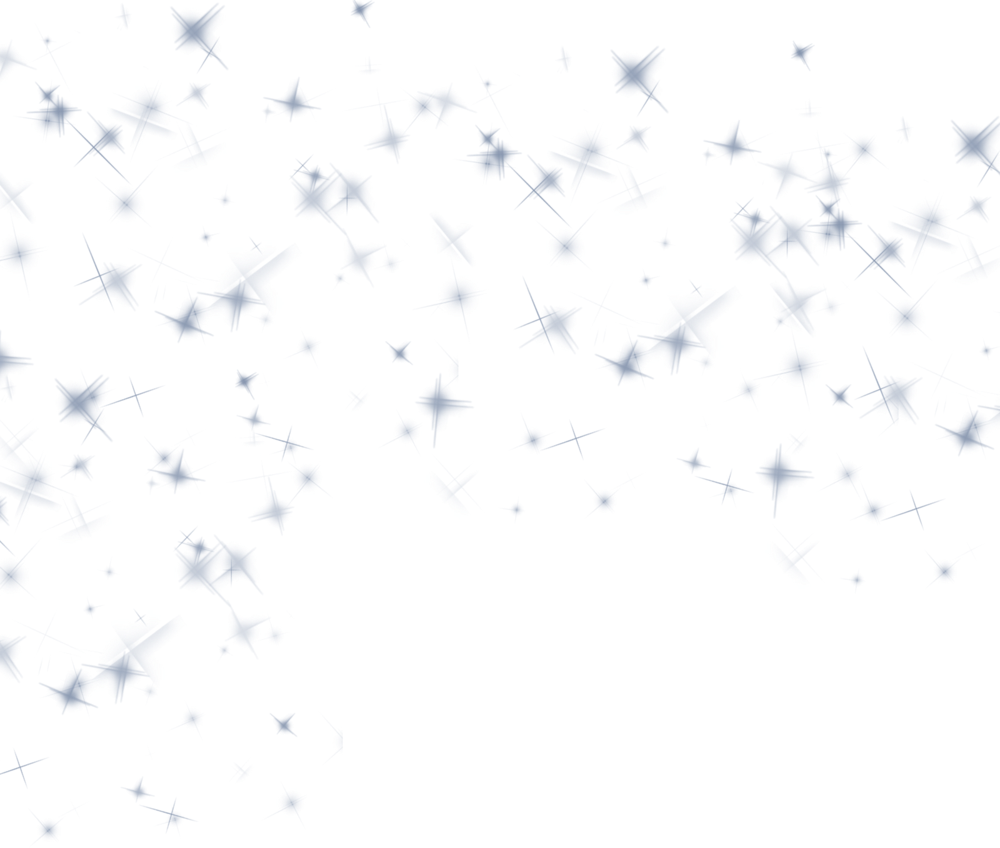
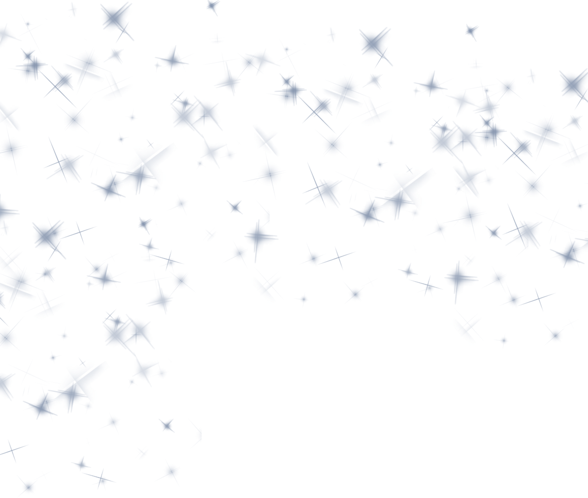

Misión de la página web
Ser un medio de comunicación que ofrezca la mejor información de actualidad para los estudiantes interesados
al proyecto, desde 7° hasta la 10°. Ofrecer a través de la información de actualidad herramientas que ayude a
mejorar la gestión del proyecto y de este modo poder mostrar el progreso de la organización del evento.
Visión de la página web
Convertirnos en una plataforma de referencia en el ámbito de la información educativa. Impulsar la educación
en todas sus etapas a través de la construcción de una página con una base sólida y de fácil acceso.

Valores coorporativos de la página web
somos una entidad educativa que se enfoca en el beneficio de los demás.
Privacidad: Nos preocupamos por la privacidad de los que inician en nuestra página.
Productividad: Aseguramos que nuestro ambiente de trabajo será agradable y productivo.
Responsabilidad. Respeto, Tolerancia y Equidad son otros de nuestros principales valores.

Metodología de el proyecto
También para elegir a las favorecidas de esta celebración. se toma en cuenta el número de quinceañeras se
elige dependiendo del número de estudiantes de la media técnica de patronaje.
Localización del proyecto
Santo Domingo es un municipio de Colombia, localizado en la subregión Nordeste del departamento de Antioquia.
Limita por el norte con los municipios de Yolombó y Cisneros, por el este con el municipio de San Roque, por
el sur con los municipios de Alejandría y Concepción, y por el oeste con los municipios de Barbosa, Donmatías
y Santa Rosa de Osos. En 1993 el director de cine Víctor Gaviria rodó la obra Simón El Mago en el municipio
con personajes locales para representar el cuento del autor antioqueño.
 
